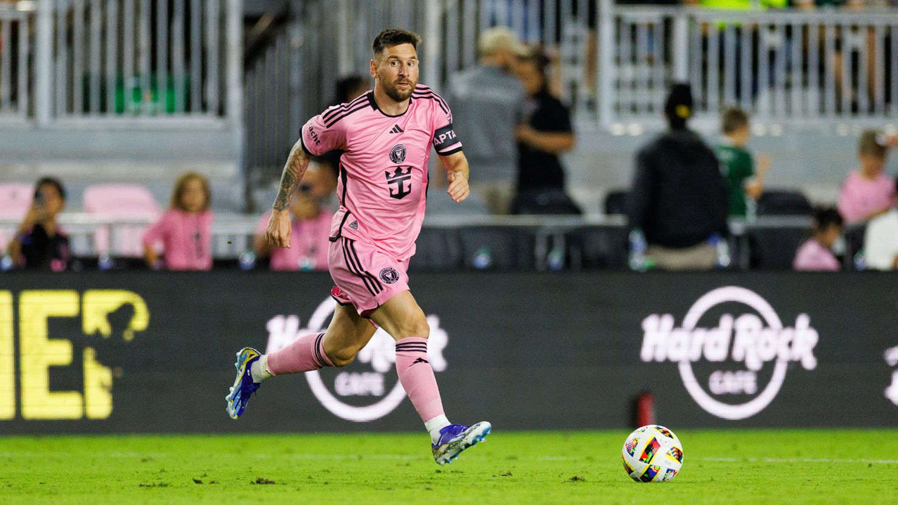

Futbol Club Barcelona | 2003-2021

El 16 de noviembre de 2003 es una de las fechas más importantes de la historia del FC Barcelona. Un día para recordar, y es que un joven futbolista argentino hizo acto de presencia con la camiseta azulgrana por primera vez. Con solo 16 años, un tal Leo Messi debutó con el primer equipo del Barça en un amistoso ante el Oporto en la inauguración de su estadio, Do Dragão.
El jugador formado en La Masía se estrenó bajo las órdenes de Frank Rijkaard en el minuto 71 de partido, cuando sustituyó a Fernando Navarro y puso la primera piedra de un camino lleno de historia. Sin embargo, el Barça perdió 2-0. Con el '14' en la espalda, el argentino empezó a escribir en letras de oro su legendaria carrera como azulgrana.
20 años después, la historia se ha escrito sola. Leo Messi es considerado el mejor jugador de todos los tiempos y, obviamente, el mejor futbolista que ha vestido la camiseta azulgrana del Barça. Sus números, tanto individuales como colectivos, lo confirman de forma rotunda.
París Saint-Germain | 2021-2023

El 10 de agosto de 2021 marcó un antes y un después en la historia del fútbol mundial. Lionel Messi, tras más de 20 años en el FC Barcelona, anunciaba su partida del club que lo vio crecer como futbolista y convertirse en una leyenda. El motivo principal fue la situación económica del Barça, que imposibilitó su renovación debido a las limitaciones del "fair play" financiero impuesto por LaLiga.
El astro argentino, que había llegado a Barcelona con solo 13 años, dejó el club tras haber conquistado 35 títulos, incluidos 4 Champions League y 10 Ligas. Durante su paso por el Barça, Messi rompió innumerables récords, convirtiéndose en el máximo goleador de la historia del club y ganando 6 Balones de Oro mientras vestía la camiseta blaugrana.
Tras la inesperada despedida del Camp Nou, Messi fue anunciado como nuevo jugador del Paris Saint-Germain (PSG) el 11 de agosto de 2021. Con la camiseta número 30 en su espalda —el mismo número con el que debutó en el Barça—, llegó al equipo francés para unirse a un tridente ofensivo junto a Neymar Jr. y Kylian Mbappé.
Su llegada al PSG fue vista como el inicio de una nueva era tanto para el club parisino como para el fútbol mundial. Aunque el cambio fue significativo, el legado de Messi en el Barcelona sigue siendo imborrable, y su partida marcó el final de una era dorada para el equipo catalán.
Inter de Miami | 2023-Continua

El 7 de junio de 2023, el fútbol vivió otro momento histórico: Lionel Messi anunció su decisión de fichar por el Inter de Miami, poniendo fin a su etapa en Europa. Tras dos temporadas en el Paris Saint-Germain (PSG), donde ganó varios títulos, incluyendo la Ligue 1, y aunque jugó junto a estrellas como Neymar y Mbappé, su tiempo en el PSG no fue tan brillante ni tan cómodo como su legado en el FC Barcelona.
En París, Messi continuó demostrando su calidad, pero las expectativas altísimas y la presión constante marcaron su estancia en el PSG. A pesar de haber contribuido a los títulos del club, no logró conquistar la tan anhelada Champions League. Además, su relación con la afición parisina se deterioró, especialmente hacia el final de la temporada, lo que sumó al ambiente tenso que vivió en el equipo francés.
Con su llegada al Inter de Miami, Messi tomó una decisión que sorprendió a muchos. Optó por un nuevo desafío, esta vez en la Major League Soccer (MLS), rechazando ofertas millonarias de clubes europeos y del fútbol saudí. Su incorporación al equipo estadounidense, propiedad de David Beckham, fue vista como un impulso crucial para el crecimiento del fútbol en Estados Unidos.
El fichaje de Messi por el Inter de Miami no solo trajo un cambio radical en su carrera, sino que también puso a la MLS en el foco global. En su primer partido con el equipo, Messi demostró que, a pesar de su edad, sigue siendo un jugador decisivo, marcando un golazo de tiro libre en el último minuto para asegurar la victoria, en una de esas actuaciones mágicas que lo han definido a lo largo de los años.
Esta nueva etapa en su carrera representa un desafío distinto, pero su llegada a Miami confirma su deseo de seguir disfrutando del fútbol, ahora en un ambiente más relajado, donde su legado sigue creciendo.
Selección Argentina | 2005-
Lionel Messi y su historia con la selección argentina es una de las narrativas más fascinantes y conmovedoras del fútbol. Aunque Messi es considerado uno de los mejores jugadores de todos los tiempos, su relación con la albiceleste no siempre fue fácil, marcada tanto por logros extraordinarios como por dolorosas decepciones.
Su debut con la selección mayor se produjo el 17 de agosto de 2005, en un amistoso ante Hungría. Sin embargo, no fue el comienzo soñado: Messi fue expulsado apenas 47 segundos después de haber ingresado al campo. A pesar de este amargo inicio, el joven argentino pronto se consolidó como la gran esperanza del fútbol argentino, liderando a su equipo en múltiples torneos.
A lo largo de los años, Messi tuvo que enfrentar duras críticas, sobre todo por la falta de títulos importantes con la selección. Las derrotas en la final del Mundial 2014 y en dos ediciones consecutivas de la Copa América (2015 y 2016) fueron especialmente dolorosas. En 2016, tras perder su tercera final de Copa América, Messi anunció que se retiraba de la selección, una decisión que sacudió al mundo del fútbol. Sin embargo, la presión de los aficionados y el amor por su país lo llevaron a revertir su decisión poco después.
Todo cambió el 10 de julio de 2021, cuando Messi finalmente consiguió su primer gran título con Argentina al ganar la Copa América en Brasil, derrotando al equipo anfitrión en el icónico Maracaná. Fue un momento de reivindicación para Messi, quien fue elegido el mejor jugador del torneo, sumando 4 goles y 5 asistencias en su camino hacia el título. La imagen de Messi alzando la Copa América, rodeado de sus compañeros y llorando de emoción, se convirtió en un símbolo de su resiliencia y dedicación.
El punto culminante de su carrera con la selección llegó el 18 de diciembre de 2022, cuando Argentina conquistó su tercera Copa del Mundo en Qatar. En una final épica contra Francia, Messi marcó dos goles y convirtió en la tanda de penales, consolidándose como el líder indiscutible del equipo. Levantó el trofeo más prestigioso del fútbol, cerrando así el círculo y acallando definitivamente cualquier duda sobre su legado en el fútbol internacional.
Con la Copa América y el Mundial en sus manos, Messi se convirtió en un héroe nacional, el máximo goleador y el jugador con más partidos en la historia de la selección argentina. Lo que empezó como una relación llena de expectativas y fracasos, terminó en gloria, consolidando a Lionel Messi como uno de los jugadores más grandes que ha vestido la camiseta albiceleste.